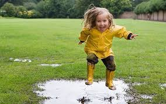

Наша місія
Ми віримо, що кожна дитина послана Богом в цей світ, щоб виконати своє призначення. Ми впевнені, що любов - усе, що потрібно душі, а маленькій особливо. Ми не виховуємо, а лише створюємо умови для гармонійного розвитку особистості. ми плекаємо не успішних, а щасливих людей. на практиці ми п’ємо воду, їмо здорову їжу, багато гуляємо, займаємось йогою, сортуємо сміття, граємось іграшками, читаємо, творимо і байдикуємо в своє задоволення. Про нас впевнено можна сказати: “На колір і смак всі фломастери різні” . Наша педагогіка базована, перш за все, на наших відчуттях тому, що саме такий підхід, в основу якого покладена любов до дитини та усього живого, є природнім та істинним. “Не чіпай, то брудне" - це не про нас.
Наші будні
Про заняття
Гратись, пізнавати світ, бігати, стрибати, спілкуватись, сміятись, плакати, допомагати дорослим - ось чим, на наше переконання, повинні займатись діти? Діставати нові знання маленька людина має органічно: від дорослих, від інших дітей, самостійно спостерігаючи за світом, проводячи свої дитячі експерименти? Тому у нас працюють педагоги різної статі. Наші вихователі, окрім того, що розділяють наші цінності, самі ведуть здоровий спосіб життя, люблять дітей ще й наділені талантами чи певними знаннями. І ці свої вміння будуть природньо передавати дітям протягом усього дня, а не лише з такої по таку годину. Адже вчитись рахувати надзвичайно веселіше, кидаючи м'яча, чи вчити англійську, - називаючи фрукт, який хочеш узяти??? Заняття також будуть, але це швидше час на творчість, в якому головний сам процес творення, а не результат. Тому не чекайте малюнків з сонцем, зроблених по шаблону. Ми даємо дітям свободу намалювати це сонце так, як вони його бачать? Зате Ви побачите самовираження власного малюка, його погляд на світ, а ще переживання, які він чи вона проживає і відображає на папері. Нам видається це набагато прекраснішим??? а Вам? ⠀
Режим дня садочку
- 8.00 – прихід дітей
- 8.45 – розминка
- 9.00 – сніданок
- 9.30 – заняття (в теплу пору відбувається на прогулянці)
- 10.30 - прогулянка
- 12.30 – обід
- 13.00 – сон
- 16.00 – підвечірок
- 16.30 – прогулянка / заняття
- 18.00 – вільний час
Обов'язкові завдання до виконання
⠀ 
- стрибати по калюжах
- грати в хованки
- кидати м'яча
- гойдатись
- лазити по швецькій стінці
- займатись гімнастикою
- ричати як лев
- танцювати та відбивати ритм
- ліпити
- робити орігамі
- складати пазли
- їсти здорову їжу
- допомогати накривати та прибирати зі столу
- пророщувати мікрозелень
- співати пісеньки
- читати книжки
- спати
- робити смузі
- знову гуляти
Статут
⠀ Те як же ж ми ставимося до дітей або пам'ятка вихователям:
- ми розуміємо, що залишаючись в садочку, дитина розлучається зі своїми найближчими людьми.
- ми повинні побудувати з кожною дитиною стосунки, в яких вона нам довіряє, вірить і має нашу любов і підтримку.
- ми не заміняємо її маму чи тата, але ми той дорослий, який відповідальний за малюка, коли він у садку.
- ми любимо і цінуємо кожну дитину такою, якою вона є. ми любимо просто так, а хвалимо за старання та досягнення.
- ми не порівнюємо дітей. кожен з них наділений своїм набором талантів та має різний рівень умінь.
- ми порівнюємо дитину лише з нею самою: наскільки краще в неї виходить певна справа.
- ми обіймаємо, гладимо по голівці, цілуємо в щічку, беремо на ручки, колишемо, коли ми в таких стосунках із дитиною, що вона дозволяє це зробити та потребує цього
- ми не б'ємо дітей, не сваримо їх, не ставимо в кути.
- ми пояснюємо чому так не можна робити. один-на-один, дивлячись одне одному у вічі.
- ми пам'ятаємо, що наші стосунки завжди важливіші за поведінку дитини. і щоб не сталося, дитина повинна знати, що вона завжди матиме нашу любов і довіру
- ми дозволяємо дітям бути вільними у виборі, коли це можливо. якщо дитина не хоче ліпити квіточку, як усі, вона може робити щось інше. якщо не хоче спати - може тихенько гратися. не хоче їсти запропоновану страву - може з'їсти хлібці чи фрукти.
- ми не змушуємо, ми мотивуємо.
- ми підтримуємо самостійність. ми дозволяємо самостійно розставити тарілки, налити смузі в чашку, позамітати, навіть якщо у дитини це поки не дуже виходить. ми хвалимо за старання та показуємо як зробити краще.
- ми забороняємо лише у випадках небезпеки для життя чи здоров'я дитини. у решті випадків ми наглядаємо та страхуємо, але не зупиняємо. якщо дитина хоче вилізти на високий турнік, ми не кажемо, що вона ще замаленька. ми страхуємо її та пояснюємо, що це можна робити, але лише під наглядом дорослих. якщо дитина бажає порізати фрукти, вона може це зробити, але лише з допомогою вихователя
- ми не відмовляємо дитині у допомозі, навіть якщо вона може зробити це сама. ми можемо попросити почекати, поки ми допомагаємо іншій дитині або змотивувати до самостійного виконання.
- ми не забороняємо плакати. ми розуміємо, що сльози нормальна реакція дитини на події, які її не влаштовують. ми показуємо як можна змінити ситуацію, або пригортаємо та заспокоюємо, коли змінити її неможливо.
- ми також приймаємо, а не забороняємо злість та агресію дитини. ми стараємось зрозуміти, чому дитина проявляє їх (хоче їсти, спати, втомлена, не відчуває себе у безпеці і т.д.) і виправляємо ситуацію. або запитуємо в дитини про причину, коли виявити самі не можемо і показуємо як можна вирішити все по-іншому.
- ми дозволяємо дітям вирішити конфлікти між собою самостійно. ми втручаємося лише тоді, коли він зайшов у глухий кут. ми показуємо, як можна висловити свої потреби і знайти спільне рішення.
Ми у соцмережах
Звяжіться з нами
Наша адреса
м.Львів
вул.Джерельна, 69
Тел.:
+380111111111 Марічка
+380222222222 (Viber)
+380333333333 Надія
+380444444444 (Viber)